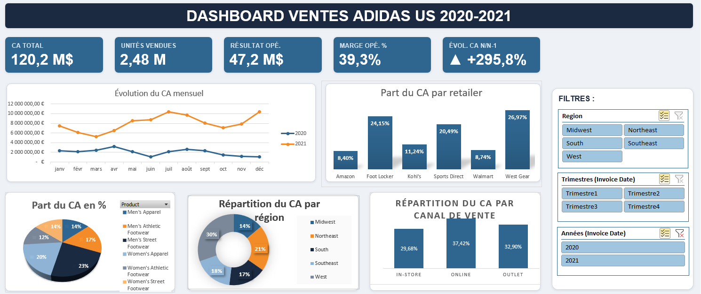
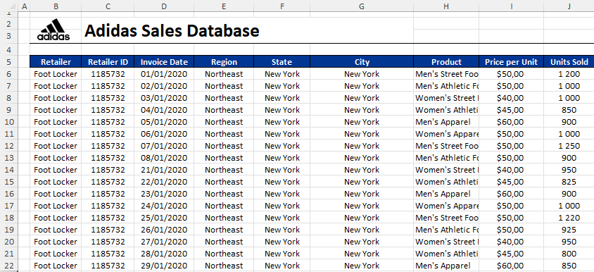
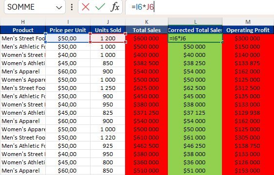
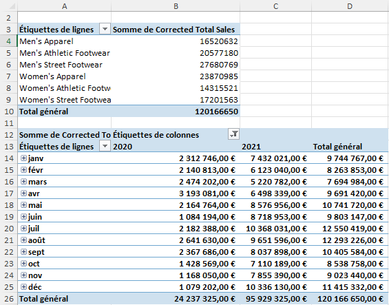

- outilExcel
- analyseTCD
- restitutionDashboard
- période2020–2021
Tableau de bord interactif construit dans Excel à partir de 9 648 ventes Adidas aux États-Unis, avec un audit de la qualité des données avant toute analyse.
- ventes analysées
- 9 648
- de chiffre d'affaires
- 120 M$
- de marge opérationnelle
- 39 %


(ouvrir en taille réelle)Comment je l'ai réalisé
-
Prise en main des données
9 648 ventes réparties sur 2020 et 2021. Chaque ligne indique notamment le prix, la quantité vendue, le chiffre d'affaires, la marge et l'État.

(ouvrir en taille réelle)Aperçu des données brutes, une ligne par vente. -
Audit de la qualité
En contrôlant le chiffre d'affaires, j'ai repéré des lignes où il était faux d'un facteur 10. Je l'ai recalculé à partir du prix et des quantités vendues.
CA recalculé = Prix unitaire × Quantité vendueImportant
Sans cette correction, le chiffre d'affaires de ces lignes était multiplié par 10 et tous les indicateurs étaient faussés.

(ouvrir en taille réelle)En rouge le chiffre d'affaires d'origine, en vert le chiffre d'affaires recalculé (prix × quantités). -
Tableaux croisés dynamiques
Les indicateurs (chiffre d'affaires, marge opérationnelle) sont agrégés avec des tableaux croisés dynamiques.

(ouvrir en taille réelle)Les tableaux croisés dynamiques : chiffre d'affaires par produit, puis par mois pour 2020 et 2021. -
Tableau de bord interactif
Les TCD alimentent le tableau de bord : 120 M$ de chiffre d'affaires et 39 % de marge opérationnelle sur la période.
-
Limite identifiée
Avant de comparer les deux années, j'ai vérifié ce que chacune couvre.
Attention
2020 couvre 9 États contre 46 en 2021 : l'évolution brute d'une année sur l'autre n'est pas comparable.


Ce que j'ai appris
- Auditer avant d'analyser. Une erreur ×10 sur une partie des lignes suffit à fausser tous les indicateurs.
- Vérifier la couverture des données avant de comparer deux périodes : 9 États d'un côté, 46 de l'autre.
- Restituer avec Excel : des tableaux croisés dynamiques et un tableau de bord lisibles par un non-spécialiste.